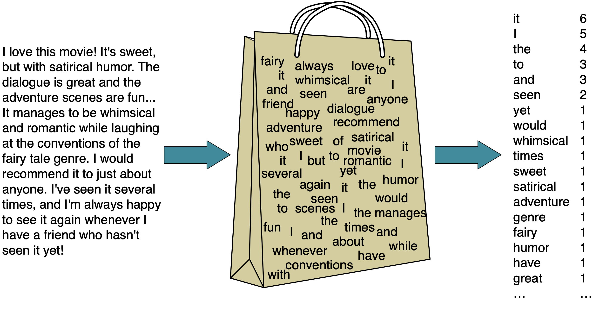

import os
import sys
import matplotlib.pyplot as plt
import numpy as np
import pandas as pd
from IPython.display import HTML
sys.path.append("../code/.")
from plotting_functions import *
from utils import *
pd.set_option("display.max_colwidth", 200)
from sklearn.compose import ColumnTransformer, make_column_transformer
from sklearn.dummy import DummyClassifier, DummyRegressor
from sklearn.impute import SimpleImputer
from sklearn.model_selection import cross_val_score, cross_validate, train_test_split
from sklearn.neighbors import KNeighborsClassifier
from sklearn.pipeline import Pipeline, make_pipeline
from sklearn.preprocessing import OneHotEncoder, OrdinalEncoder, StandardScaler
from sklearn.svm import SVC
from sklearn.tree import DecisionTreeClassifier
Intel MKL WARNING: Support of Intel(R) Streaming SIMD Extensions 4.2 (Intel(R) SSE4.2) enabled only processors has been deprecated. Intel oneAPI Math Kernel Library 2025.0 will require Intel(R) Advanced Vector Extensions (Intel(R) AVX) instructions.
Intel MKL WARNING: Support of Intel(R) Streaming SIMD Extensions 4.2 (Intel(R) SSE4.2) enabled only processors has been deprecated. Intel oneAPI Math Kernel Library 2025.0 will require Intel(R) Advanced Vector Extensions (Intel(R) AVX) instructions.
Announcements#
Homework 3 is due on Monday, Oct 2nd.
Worksheet 1 and 2 grades
Homework 2 grading is almost done. The grades will be released later today.
Preprocessing mistakes#
from sklearn.datasets import make_blobs, make_classification
# make synthetic data
X, y = make_blobs(n_samples=100, centers=3, random_state=12, cluster_std=5)
# split it into training and test sets
X_train_toy, X_test_toy, y_train_toy, y_test_toy = train_test_split(
X, y, random_state=5, test_size=0.4)
plt.scatter(X_train_toy[:, 0], X_train_toy[:, 1], label="Training set", s=60)
plt.scatter(
X_test_toy[:, 0], X_test_toy[:, 1], color=mglearn.cm2(1), label="Test set", s=60
)
plt.legend(loc="upper right")
<matplotlib.legend.Legend at 0x14ac06aa0>

Bad methodology 1: Scaling the data separately (for class discussion)#
# DO NOT DO THIS! For illustration purposes only.
scaler = StandardScaler()
scaler.fit(X_train_toy)
train_scaled = scaler.transform(X_train_toy)
scaler = StandardScaler() # Creating a separate object for scaling test data
scaler.fit(X_test_toy) # Calling fit on the test data
test_scaled = scaler.transform(
X_test_toy
) # Transforming the test data using the scaler fit on test data
knn = KNeighborsClassifier()
knn.fit(train_scaled, y_train_toy)
print(f"Training score: {knn.score(train_scaled, y_train_toy):.2f}")
print(f"Test score: {knn.score(test_scaled, y_test_toy):.2f}")
Training score: 0.63
Test score: 0.60
plot_original_scaled(
X_train_toy,
X_test_toy,
train_scaled,
test_scaled,
title_transformed="Improperly transformed",
)

Bad methodology 2: Scaling the data together (for class discussion)#
# join the train and test sets back together
XX = np.vstack((X_train_toy, X_test_toy))
XX.shape
(100, 2)
scaler = StandardScaler()
scaler.fit(XX)
XX_scaled = scaler.transform(XX)
XX_train = XX_scaled[:X_train_toy.shape[0]]
XX_test = XX_scaled[X_train_toy.shape[0]:]
knn = KNeighborsClassifier()
knn.fit(XX_train, y_train_toy)
print(f"Training score: {knn.score(XX_train, y_train_toy):.2f}") # Misleading score
print(f"Test score: {knn.score(XX_test, y_test_toy):.2f}") # Misleading score
Training score: 0.63
Test score: 0.55
plot_original_scaled(
X_train_toy,
X_test_toy,
XX_train,
XX_test,
title_transformed="Improperly transformed",
)

XX_scaled[:, 0].mean(), XX_scaled[:, 0].std(),
(-5.218048215738236e-16, 1.0)
XX_train[:, 0].mean(), XX_train[:, 0].std()
(-0.07799695717181604, 1.0501997049901186)
XX_test[:, 0].mean(), XX_test[:, 0].std()
(0.11699543575772282, 0.9070874541507946)
Bad methodology 3: Cross validation with already preprocessed data (for class discussion)#
knn = KNeighborsClassifier()
scaler = StandardScaler()
scaler.fit(X_train_toy)
X_train_scaled = scaler.transform(X_train_toy)
X_test_scaled = scaler.transform(X_test_toy)
scores = cross_validate(knn, X_train_scaled, y_train_toy, return_train_score=True)
pd.DataFrame(scores)
| fit_time | score_time | test_score | train_score | |
|---|---|---|---|---|
| 0 | 0.000377 | 0.001086 | 0.250000 | 0.687500 |
| 1 | 0.000269 | 0.000885 | 0.500000 | 0.625000 |
| 2 | 0.000281 | 0.000889 | 0.583333 | 0.541667 |
| 3 | 0.000265 | 0.000861 | 0.583333 | 0.604167 |
| 4 | 0.000256 | 0.000855 | 0.416667 | 0.604167 |
plot_improper_processing("kNN")

(iClicker) Exercise 5.3#
iClicker cloud join link: https://join.iclicker.com/SNBF
Select all of the following statements which are TRUE.
You can have scaling of numeric features, one-hot encoding of categorical features, and
scikit-learnestimator within a single pipeline.Once you have a
scikit-learnpipeline object with an estimator as the last step, you can callfit,predict, andscoreon it.You can carry out data splitting within
scikit-learnpipeline.We have to be careful of the order we put each transformation and model in a pipeline.
If you call
cross_validatewith a pipeline object, it will callfitandtransformon the training fold and onlytransformon the validation fold.
Learning outcomes#
From this lecture, you will be able to
Use
ColumnTransformerto build all our transformations together into one object and use it withsklearnpipelines.Define
ColumnTransformerwhere transformers contain more than one steps.Explain
handle_unknown="ignore"hyperparameter ofscikit-learn’sOneHotEncoder.Explain
drop="if_binary"argument ofOneHotEncoder;Identify when it’s appropriate to apply ordinal encoding vs one-hot encoding.
Explain strategies to deal with categorical variables with too many categories.
Explain why text data needs a different treatment than categorical variables.
Use
scikit-learn’sCountVectorizerto encode text data.Explain different hyperparameters of
CountVectorizer.Incorporate text features in a machine learning pipeline.
sklearn’s ColumnTransformer#
df = pd.read_csv("../data/quiz2-grade-toy-col-transformer.csv")
df.head()
| enjoy_course | ml_experience | major | class_attendance | university_years | lab1 | lab2 | lab3 | lab4 | quiz1 | quiz2 | |
|---|---|---|---|---|---|---|---|---|---|---|---|
| 0 | yes | 1 | Computer Science | Excellent | 3 | 92 | 93.0 | 84 | 91 | 92 | A+ |
| 1 | yes | 1 | Mechanical Engineering | Average | 2 | 94 | 90.0 | 80 | 83 | 91 | not A+ |
| 2 | yes | 0 | Mathematics | Poor | 3 | 78 | 85.0 | 83 | 80 | 80 | not A+ |
| 3 | no | 0 | Mathematics | Excellent | 3 | 91 | NaN | 92 | 91 | 89 | A+ |
| 4 | yes | 0 | Psychology | Good | 4 | 77 | 83.0 | 90 | 92 | 85 | A+ |
df.info()
<class 'pandas.core.frame.DataFrame'>
RangeIndex: 21 entries, 0 to 20
Data columns (total 11 columns):
# Column Non-Null Count Dtype
--- ------ -------------- -----
0 enjoy_course 21 non-null object
1 ml_experience 21 non-null int64
2 major 21 non-null object
3 class_attendance 21 non-null object
4 university_years 21 non-null int64
5 lab1 21 non-null int64
6 lab2 19 non-null float64
7 lab3 21 non-null int64
8 lab4 21 non-null int64
9 quiz1 21 non-null int64
10 quiz2 21 non-null object
dtypes: float64(1), int64(6), object(4)
memory usage: 1.9+ KB
X = df.drop(columns=["quiz2"])
y = df["quiz2"]
X.columns
Index(['enjoy_course', 'ml_experience', 'major', 'class_attendance',
'university_years', 'lab1', 'lab2', 'lab3', 'lab4', 'quiz1'],
dtype='object')
X.head()
| enjoy_course | ml_experience | major | class_attendance | university_years | lab1 | lab2 | lab3 | lab4 | quiz1 | |
|---|---|---|---|---|---|---|---|---|---|---|
| 0 | yes | 1 | Computer Science | Excellent | 3 | 92 | 93.0 | 84 | 91 | 92 |
| 1 | yes | 1 | Mechanical Engineering | Average | 2 | 94 | 90.0 | 80 | 83 | 91 |
| 2 | yes | 0 | Mathematics | Poor | 3 | 78 | 85.0 | 83 | 80 | 80 |
| 3 | no | 0 | Mathematics | Excellent | 3 | 91 | NaN | 92 | 91 | 89 |
| 4 | yes | 0 | Psychology | Good | 4 | 77 | 83.0 | 90 | 92 | 85 |
# apply scaling
numeric_feats = ["university_years", "lab1", "lab3", "lab4", "quiz1"]
# apply one-hot encoding
categorical_feats = ["major"]
# do not apply any transformation
passthrough_feats = ["ml_experience"]
# do not include these features in modeling
drop_feats = ["lab2", "class_attendance", "enjoy_course"]
from sklearn.compose import ColumnTransformer
ct = ColumnTransformer(
[
("scaling", StandardScaler(), numeric_feats),
("onehot", OneHotEncoder(sparse=False), categorical_feats),
]
)
from sklearn.compose import make_column_transformer
ct = make_column_transformer(
(StandardScaler(), numeric_feats), # scaling on numeric features
("passthrough", passthrough_feats), # no transformations on the binary features
(OneHotEncoder(handle_unknown="ignore"), categorical_feats), # OHE on categorical features
("drop", drop_feats), # drop the drop features
)
transformed = ct.fit_transform(X)
print(type(transformed))
# Let's look at first row of transformed data
transformed[0]
<class 'numpy.ndarray'>
array([-0.09345386, 0.3589134 , -0.21733442, 0.36269995, 0.84002795,
1. , 0. , 1. , 0. , 0. ,
0. , 0. , 0. , 0. ])
column_names = (
numeric_feats
+ passthrough_feats
+ ct.named_transformers_["onehotencoder"].get_feature_names_out().tolist()
)
column_names
['university_years',
'lab1',
'lab3',
'lab4',
'quiz1',
'ml_experience',
'major_Biology',
'major_Computer Science',
'major_Economics',
'major_Linguistics',
'major_Mathematics',
'major_Mechanical Engineering',
'major_Physics',
'major_Psychology']
pd.DataFrame(transformed, columns=column_names).head()
| university_years | lab1 | lab3 | lab4 | quiz1 | ml_experience | major_Biology | major_Computer Science | major_Economics | major_Linguistics | major_Mathematics | major_Mechanical Engineering | major_Physics | major_Psychology | |
|---|---|---|---|---|---|---|---|---|---|---|---|---|---|---|
| 0 | -0.093454 | 0.358913 | -0.217334 | 0.362700 | 0.840028 | 1.0 | 0.0 | 1.0 | 0.0 | 0.0 | 0.0 | 0.0 | 0.0 | 0.0 |
| 1 | -1.074719 | 0.590827 | -0.614206 | -0.855972 | 0.712198 | 1.0 | 0.0 | 0.0 | 0.0 | 0.0 | 0.0 | 1.0 | 0.0 | 0.0 |
| 2 | -0.093454 | -1.264480 | -0.316552 | -1.312974 | -0.693936 | 0.0 | 0.0 | 0.0 | 0.0 | 0.0 | 1.0 | 0.0 | 0.0 | 0.0 |
| 3 | -0.093454 | 0.242957 | 0.576409 | 0.362700 | 0.456537 | 0.0 | 0.0 | 0.0 | 0.0 | 0.0 | 1.0 | 0.0 | 0.0 | 0.0 |
| 4 | 0.887812 | -1.380436 | 0.377973 | 0.515034 | -0.054784 | 0.0 | 0.0 | 0.0 | 0.0 | 0.0 | 0.0 | 0.0 | 0.0 | 1.0 |
ColumnTransformer: Transformed data#
Combining with Pipeline#
pipe = make_pipeline(ct, SVC())
pipe.fit(X, y)
pipe.predict(X)
array(['A+', 'not A+', 'not A+', 'A+', 'A+', 'not A+', 'A+', 'not A+',
'not A+', 'A+', 'A+', 'A+', 'A+', 'A+', 'not A+', 'not A+', 'A+',
'not A+', 'not A+', 'not A+', 'A+'], dtype=object)
scores = cross_validate(pipe, X, y, cv=5, return_train_score=True)
pd.DataFrame(scores)
| fit_time | score_time | test_score | train_score | |
|---|---|---|---|---|
| 0 | 0.004939 | 0.001858 | 1.00 | 0.937500 |
| 1 | 0.003220 | 0.001740 | 1.00 | 0.941176 |
| 2 | 0.003174 | 0.001712 | 0.50 | 1.000000 |
| 3 | 0.003152 | 0.001699 | 0.75 | 0.941176 |
| 4 | 0.003126 | 0.001736 | 1.00 | 0.941176 |
(iClicker) Exercise 6.1#
iClicker cloud join link: https://join.iclicker.com/3DP5H
Select all of the following statements which are TRUE.
You could carry out cross-validation by passing a
ColumnTransformerobject tocross_validate.After applying column transformer, the order of the columns in the transformed data has to be the same as the order of the columns in the original data.
After applying a column transformer, the transformed data is always going to be of different shape than the original data.
When you call
fit_transformon aColumnTransformerobject, you get a numpy ndarray.
Break (5 min)#

Encoding text data#
toy_spam = [
[
"URGENT!! As a valued network customer you have been selected to receive a £900 prize reward!",
"spam",
],
["Lol you are always so convincing.", "non spam"],
["Nah I don't think he goes to usf, he lives around here though", "non spam"],
[
"URGENT! You have won a 1 week FREE membership in our £100000 prize Jackpot!",
"spam",
],
[
"Had your mobile 11 months or more? U R entitled to Update to the latest colour mobiles with camera for Free! Call The Mobile Update Co FREE on 08002986030",
"spam",
],
["Congrats! I can't wait to see you!!", "non spam"],
]
toy_df = pd.DataFrame(toy_spam, columns=["sms", "target"])
What if the feature is in the form of raw text?
The feature
smsbelow is neither categorical nor ordinal.How can we encode it so that we can pass it to the machine learning algorithms we have seen so far?
toy_df
| sms | target | |
|---|---|---|
| 0 | URGENT!! As a valued network customer you have been selected to receive a £900 prize reward! | spam |
| 1 | Lol you are always so convincing. | non spam |
| 2 | Nah I don't think he goes to usf, he lives around here though | non spam |
| 3 | URGENT! You have won a 1 week FREE membership in our £100000 prize Jackpot! | spam |
| 4 | Had your mobile 11 months or more? U R entitled to Update to the latest colour mobiles with camera for Free! Call The Mobile Update Co FREE on 08002986030 | spam |
| 5 | Congrats! I can't wait to see you!! | non spam |
Bag of words (BOW) representation#
One of the most popular representation of raw text
Ignores the syntax and word order
It has two components:
The vocabulary (all unique words in all documents)
A value indicating either the presence or absence or the count of each word in the document.

Extracting BOW features using scikit-learn#
CountVectorizerConverts a collection of text documents to a matrix of word counts.
Each row represents a “document” (e.g., a text message in our example).
Each column represents a word in the vocabulary (the set of unique words) in the training data.
Each cell represents how often the word occurs in the document.
from sklearn.feature_extraction.text import CountVectorizer
vec = CountVectorizer()
X_counts = vec.fit_transform(toy_df["sms"])
bow_df = pd.DataFrame(
X_counts.toarray(), columns=vec.get_feature_names_out(), index=toy_df["sms"]
)
bow_df
| 08002986030 | 100000 | 11 | 900 | always | are | around | as | been | call | ... | update | urgent | usf | valued | wait | week | with | won | you | your | |
|---|---|---|---|---|---|---|---|---|---|---|---|---|---|---|---|---|---|---|---|---|---|
| sms | |||||||||||||||||||||
| URGENT!! As a valued network customer you have been selected to receive a £900 prize reward! | 0 | 0 | 0 | 1 | 0 | 0 | 0 | 1 | 1 | 0 | ... | 0 | 1 | 0 | 1 | 0 | 0 | 0 | 0 | 1 | 0 |
| Lol you are always so convincing. | 0 | 0 | 0 | 0 | 1 | 1 | 0 | 0 | 0 | 0 | ... | 0 | 0 | 0 | 0 | 0 | 0 | 0 | 0 | 1 | 0 |
| Nah I don't think he goes to usf, he lives around here though | 0 | 0 | 0 | 0 | 0 | 0 | 1 | 0 | 0 | 0 | ... | 0 | 0 | 1 | 0 | 0 | 0 | 0 | 0 | 0 | 0 |
| URGENT! You have won a 1 week FREE membership in our £100000 prize Jackpot! | 0 | 1 | 0 | 0 | 0 | 0 | 0 | 0 | 0 | 0 | ... | 0 | 1 | 0 | 0 | 0 | 1 | 0 | 1 | 1 | 0 |
| Had your mobile 11 months or more? U R entitled to Update to the latest colour mobiles with camera for Free! Call The Mobile Update Co FREE on 08002986030 | 1 | 0 | 1 | 0 | 0 | 0 | 0 | 0 | 0 | 1 | ... | 2 | 0 | 0 | 0 | 0 | 0 | 1 | 0 | 0 | 1 |
| Congrats! I can't wait to see you!! | 0 | 0 | 0 | 0 | 0 | 0 | 0 | 0 | 0 | 0 | ... | 0 | 0 | 0 | 0 | 1 | 0 | 0 | 0 | 1 | 0 |
6 rows × 61 columns
Discussion#
Why do you need to create a separate CountVectorizer for each feature (column)?
Why does it return a sparse matrix?
(iClicker) Exercise 6.2#
iClicker cloud join link: https://join.iclicker.com/SNBF
Select all of the following statements which are TRUE.
(A)
handle_unknown="ignore"would treat all unknown categories equally.(B) As you increase the value for
max_featureshyperparameter ofCountVectorizerthe training score is likely to go up.(C) Suppose you are encoding text data using
CountVectorizer. If you encounter a word in the validation or the test split that’s not available in the training data, we’ll get an error.(D) In the code below, inside
cross_validate, each fold might have slightly different number of features (columns) in the fold.
pipe = (CountVectorizer(), SVC())
cross_validate(pipe, X_train, y_train)
What did we learn today?#
Motivation to use
ColumnTransformerColumnTransformersyntaxDefining transformers with multiple transformations
How to visualize transformed features in a dataframe
More on ordinal features
Different arguments
OneHotEncoderhandle_unknow="ignore"if_binary
Dealing with text features
Bag of words representation:
CountVectorizer